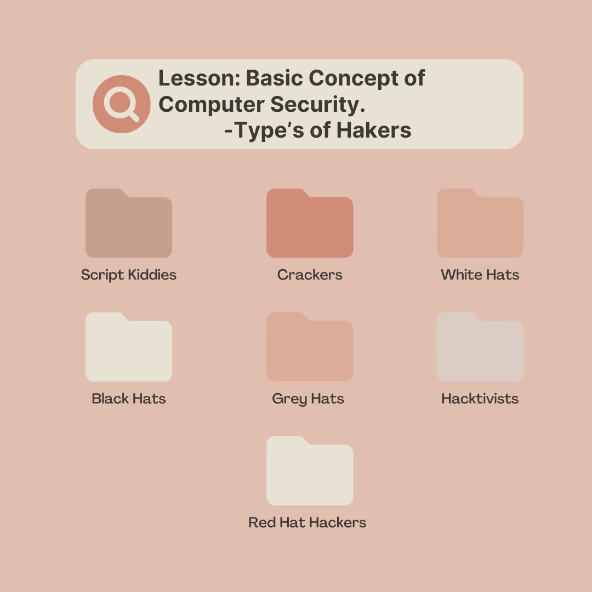

How Information process?
First, input the information. Then it processes and stores the information, and lastly, it outputs the information.

Web Development
HTML stands for Hyper Text Markup Language and CSS stands for Cascading Style Sheet.

Lesson: Basic Concept of Computer Security.Type's of hackers
Script Kidddies, Crackers, White Hats, Black Hats, Grey Hats, Hactivists, Red Hat Hackers
It is interesting, right? How does a computer process some information?
So the information processing cycle starts when the computer receives instructions, data, and information.
Then the computer applies instructions during the processing stage to produce information (organized data). And it usually happens in the CPU, or Central Processing Unit, of a computer.
And during the storage phase, it saves the information that can be done on various storage devices.
Finally, there is the result, which is the output phase.
You know that I learned new things in this lesson called Basic HTML and CSS.
Like web browsers such as Chrome, IE, Firefox, and Safari, the purpose of those web browsers is to read HTML documents that they can display. And because HTML has tags such as "heading," "paragraph," and so on, web browsers do not display the HTML tags but use them to render the content of the page.
It is a design language that designs the HTML document. What is it?
It is CSS, which stands for Cascading Style Sheet, that designs the Hyper Text Markup Language. CSS controls the color, background-color or how it displays or how big or small the text or image is in the HTML, and you can also put a different font style if you want to.
I think I am not the only one who just knows about the different kinds of hackers.
Hackers use computer systems to gain access to business trade secrets and personal information for malicious and exploitive purposes. and they are very difficult to identify.
Script Kiddies: They are the hackers that break into computer systems that use automated tools made by others.
Crackers: They are the hackers who gain access to a computer system and commit crimes like destroying information contained in that target system.
Black Hats: They are the hackers that violate computer security for reasons that might be personal gain.
Grey Hats: Between white and black hackers, there are gray hackers; they are the hackers that hack into a target computer system to find something that they will publish to the world. It is gray because even though they do it not for their personal gain, unauthorized access to a computer system is still illegal.
Hactivists: They are the group of hackers that develop malware for political reasons and are not interested in financial gains.
Red Hat Hackers: They are characterized as vigilant hackers.
My output/learnings from every lesson.
Unit 1: Intro to Computing.
Concept of computing: I've learned that computing is the process by which a computer works, and it may involve the software and hardware of the computer. I also learned that automation is a process that operates automatically and usually controls the production and delivery of products.
Career opportunities for IT professionals and their roles as professionals: I've learned in this lesson that the technology industry has many computing degrees and careers like information technology, which I am currently studying, that include systems to support learning and information according to it.
Unit 2: How computer work.
Information Processing: I learned that data represent facts and concepts in a formalized manner, while information is organized data that has some meaning to be presented to the receiver. And good information should be relevant, timely, accurate, presentable, cost-effective, and complete. It was processed by first the input of the data, then processing the data and storing it, and lastly the output.
Software: I learned that software tells the computer what to do. It has two parts: the system software and the application software. System software controls the basic operation of a computer system for it to operate, and it also has three parts: first, the operating system; it controls the execution of programs to avoid errors and ensure the computer will properly execute; and the other two are device drivers and utility programs. Application software can be installed by the user if they want to.
Number System: In this lesson, I learned that ASC11 stands for American Standard Code for Information Interchange. For the reason that computers can only understand numbers, ASCII is used as a method to give all computers the same language. I also learned that the decimal number system is the number we use every day. The binary number system only uses two digits, 1 and 0, that represent on and off, and it can be converted into decimals, octals that have a base-8 system, and hexadecimals that have a base-16 system.
Computer security: it ensures that the data stored cannot be accessed by individuals without authorization, and having encryption and a password also helps to secure your computer. There are three goals in computing security: confidentiality, integrity, and availability. Vulnerability refers to the weakness of the security; it can be a hardware vulnerability, a software vulnerability, or a data vulnerability. Threats can harm a computer system. An example of this is interception, which means that an unauthorized party has gained access. Interruption is an asset that was lost. If the unauthorized party tampers with an asset, it is called modification. Lastly, an unauthorized party might create a fabrication. And I also learned about attacks, control, and how to secure the computer in two ways: by learning what to do to physically secure your computer and also learning other secure methods like choosing a web browser, it helps if you know that using that type of web browser won't harm your computer based on its security and vulnerabilities.
Unit 3: The Dangers of the Information Age
Basic Concepts of Computer Security:I learned in this lesson that cybersecurity is the process and practice of protecting networks, programs, and data from attacks and other threats. Personal data is any information about a specific individual that can be used to identify them. And I also learned from this lesson the common types of cybercrimes such as identity theft, hacking, theft, cyberbullying and stalking, malicious software, and lastly, child soliciting and abuse, which was the worst one for me because they are using children for pornography purposes and they solicited the children through the internet. And there are also common cybercriminals like hackers, and the truth is, I just currently know that there are many types of hackers like Script Kiddies, Crackers, White Hats, Black Hats, and Gray Hats, which made me think of the past documentation I watch on the internet because they kind of have the same attitude as what the module describes. The other two types of hackers are hactivists and red hat hackers. The other types of cybercriminals are identity thieves; they are cybercriminals using other people's identities for their own gain; cyber terrorists; scammers and phishers; and insiders, which have three types: malicious insiders, negligent insiders, and infiltrators. And I learned the things to do that help secure your information online by doing network encryption, proxies, firewalls, and cyber liability insurance.
Unit 4: The internet
Internet and World Wide Web: I learned in the module that the Internet is a publicly available worldwide system for interconnected computer networks. Then I also learned about machine learning & neural networks, and cloud computing, which allows users to access their own files at a different place or using a different device through the internet. I also learned about the common uses of the internet that I usually experience with communication. The other uses of the internet are research, Internet information services, and publishing. There is also about social media, which helps us communicate and connect with our friends and family.
Cybersecurity: I learned that threats have the capability to damage a system or organization, and this can be intentional or unintentional. I also learned about vulnerability and risk. There are cyber security threats like phishing, spear-phishing, network probing, brute-force cracking, which is attempting multiple times to put the possible password until the correct one is found, and there is also drive-by download, denial service, and advanced persistent threat attack. I just currently learned about the different kinds of malware: the virus, worm, trojan horse, rootkit, backdoors, keyloggers, adware, spyware, rogue security software, ransomware, and lastly, the browser hijacker. Then I also learned that man-in-the-middle attacks allow attackers to spy on the conversation between two targets, followed by cross-site scripting (XSS), and SQL injection attacks (SQLI).
Unit 5: Web Development
HTML and CSS: I learned that HTML stands for Hyper Text Markup Language, and this describes the structure of web pages. I also learned that HTML has tags with different purposes like (<"h1">) it use for it to have large heading. CSS stands for Cascading Style Sheet, and it is used to style or design the words that you put in an HTML document.
My favorite lessonBasic concept of Computer Security
This is my favorite lesson because I learned about different very new topics for me, like Insiders, It says that these attackers are people who come from within the organization. Examples of insiders are employees, former employees, or other people workingwithin the organization. And it has three categories: malicious insiders, negligent insiders, and infiltrators.